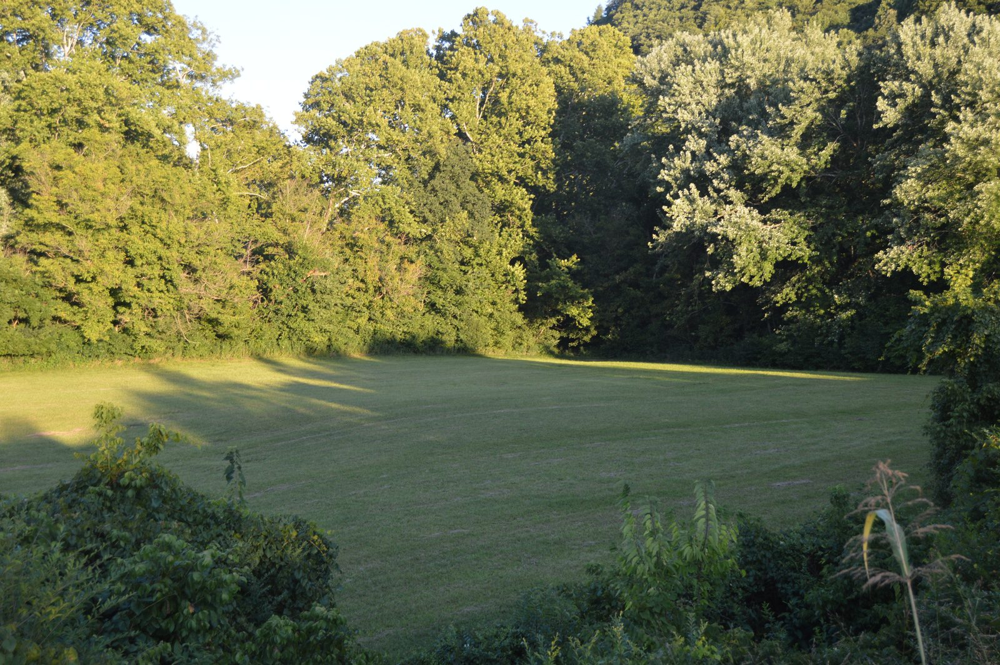

EAST is a community coalition working for environmental stewardship, transparency, and accountability in the Roanoke Valley, Botetourt County, and neighboring regions of Virginia — through research, plain-language facts, and lawful advocacy.
A secret Google datacenter is coming to Botetourt County.
The public heard Google's version first. Here's the sourced, plain-language counter-record — and what you can do about it.
Start here
- What is Project Raspberry?
A Google-linked hyperscale datacenter proposed for Greenfield in Botetourt County — advanced under a shell entity and shrouded in NDAs. - Water & power: what a hyperscale datacenter actually consumes
These facilities draw enormous amounts of water and electricity — the local questions are where it comes from and who pays.
Latest
-
Why we built this site
The public heard Google's framing first. This is the counter-source — sourced, plain-language, and built to be shared.
-
What the 'open house' actually disclosed
A one-way Q&A that functioned as PR. Here's what we learned — and what they still won't say.
Our mission & principles
EAST works for environmental stewardship, transparency, accountability, informed public participation, and responsible and collaborative decision-making. We research the record, review the technical and regulatory details, educate the public, build coalitions, and engage in lawful advocacy on the issues that affect our communities and our environment.
- Accuracy What we say is grounded in documents, facts, and analysis we clearly label as our own.
- Independence EAST is an instrument of power through knowledge — never an instrument for another politician's or organization's agenda. We set our own priorities.
- Transparency How contributed funds — and anything produced with them — are used should be clear to members and supporters.
- Public service EAST's work is undertaken for community benefit, not private gain.
- Advocacy EAST petitions, comments, educates, investigates, organizes, and advocates.